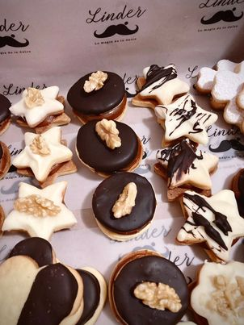

Nuestros Productos

Masas finas
Las masas finas son una deliciosa, estas masas se caracterizan por ser livianas y crujientes, con un sabor delicado que complementa perfectamente con lo dulces, son ideales por su textura fina y dorada, junto con su capacidad para absorber sabores, las convierte en una elección popular entre los amantes de la repostería..

Brownie de frutos rojos
El brownie con frutos rojos es una exquisita combinación deLa base densa y chocolatada del brownie ofrece un contraste perfecto con la acidez y el color vibrante de los frutos rojos frescos que lo adornan en la parte superior esta delicia ofrece una explosión de sabores y texturas en cada bocadocreando una experiencia única para el paladar. Su apariencia atractiva y su sabor irresistible lo convierten en un favorito .